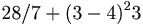

De: La Frikipedia, la enciclopedia extremadamente seria.
De: La Frikipedia, la enciclopedia extremadamente seria. De: La Frikipedia, la enciclopedia extremadamente seria.
| De la serie ciudades del mundo: | |||||
| Sant Jordi | |||||
| |||||
| Topónimo oficial | Sanjo | ||||
| País | Sant Jordi, estado independiente | ||||
| Código postal | 3-1-19-1-7-16-12 | ||||
| Superficie | Antiguamente, Raccoon City | ||||
| Altitud | Campanario a 20 m | ||||
| Distancia | Más cerca de lo que crees... | ||||
| Fundación | 1919 | ||||
| Población | Muy borde | ||||
| Gentilicio | Sanjordiniano | ||||
| Alcalde | Mr. Caracol | ||||
Sant Jordi (pronúnciese /san jordi/, del finlandés man bordi). Pequeño y tranquilo pueblo mallorquín situado a las afueras de Mêlée, capital balear. Antiguas tragedias griegas cuentan que fue allí donde cayó Lucifer después de la guerra en el cielo (Star Wars episodio VII). Se caracteriza por su gran ejército de sanjordinianos, posibles humanos pokemonizados a la  digievolución subplutónico-cuántica. Es el principal cenro de reunión para los que practican el botellón, con frecuenia se junta allí todo tipo de gentuza para beber hasta perder el control y bailar reggaeton. Sus habitantes se caracterizan por adicción al bingo y su afán por dominar el mundo. La vida en el pueblo es muy divertida, sobretodo por su fiesta oficial: La Fira des Caragol, en la que se da el espectáculo más esperado del año: las carreras de caracoles.
[Esto parece ya la clase de ciencias sociales.]
Situado a pocos quilómetros al este de Mêlée, capital mallorquina. Se encuentra muy (demasiado) cerca del Aeropuerto de Son Sant Joan.
En la antigüedad, en ese lugar se alzaba Raccoon City, conocida por los frikis de Resident Evil.
ACHTUNG: A continuación se muestra información sobre el argumento y la trama de Resident Evil 4, el videojuego".
Ciertas sectas tienen la doctrina de que Lucifer cayó en Raccoon City y provocó el holocausto biológico-nuclear que arrasó la ciudad. Poco tiempo después se construyó en el lugar una iglesia para neutralizar el mal que habitaba esas tierras. Pero el Mal pudo con el Vien y por eso he escrito mal la palabra Bien. Poco a poco ocurrió lo que nunca tendría que haber pasado: se empezó a habitar la zona y se creó una aldea alrededor de la iglesia. Hoy día, esa aldea se conoce con el mal nombre de... Sant Jordi.
Ahora, Leon S. Quenedi debe enfrentarse a su mayor y más horrorosa aventura: un pueblo maldito... unos aldeanos poco amistosos... un misterio que resolver...
LA PESADILLA RESUCITA
El sanjordiniano es una especie única en el mundo, sobre todo por su patriotismo fanático, su xenofobia y su casi absoluto rechazo social a las especies exóticas. Es un ser con el que muy pocos desgraciados privilegiados han conseguido relacionarse. Esto se debe sobretodo a la bordería a su patriotismo, llegando a convertirse ellos casi en una secta al estilo kukujklan, pero con odio al mundo entero.
El sanjordiniano medio no tiene un modelo físico fijo: hay altos, bajos, gordos, flacos, morenos, rubios, feos, feos... Pero aún así existen detalles delatantes:
El principal lugar donde encontrar a un sanjordiniano es Sant Jordi, pero hay quienes han logrado verlos en el instituto... y sobrevivir. De todos modos, si crees haber reconocido a uno, ni se te ocurra preguntarle si es de Sant Jordi, pues seguro que eso te costará una patada (o incluso un puñetazo, si es un macho, pa' que veas...) en la partes inferiores.
Lo que sí que hay que decir, y eso es importante, es que no todos los sanjordieros (gentilicio oficial de Sant Jordi) son sanjordinianos, sino que existe una pequeña minoría de gente algo más normal.
Sant Jordi es un pueblo pequeño, pero sus dimensiones escritas en SI (sistema internacional) son realmente sorprendentes: exactamente 1000 m x 500 m... (datos confirmados vía satélite, esperemos que Gúgel no nos falle). ¿Serendipia, o conspiración?
No es muy grande el nivel cultural de este lugar, pero existen ciertos datos:
ACHTUNG: La mayoría de las paridas citadas en este subtema son mentira. Con ello no se busca herir la sensibilidad de ningún espectador y/o sanjordiniano habitante de Sant Jordi.
La Fira des Caragol es una gran fiesta que se celebra una vez al año en Sant Jordi. Su duración es de un eterno fin de semana de tortura en la que se hace básicamente:

|
Aquel fue uno de esos días que tiemblan por amanecer... Estaba yo en mi cama una oscura mañana de mayo. No podía dormir. Miraba mi despertador, programado para sonar a las 7:00. Eran las 6:35. Parecía que ese día los segundos avanzaban despacio, que nunca llegaría la hora, como si el tiempo se negara a avanzar temiendo que algo terrible ocurriera. El sol parecía no querer salir, y ocultarse tras las densas nubes de algo que le causaba pavor. Recordé que el día anterior se previó lluvia para aquel mismo día. Día fatídico en el que ni la misma lluvia tuvo suficiente coraje para salir...
|

|
| Relato de mi Pasión, de El Octavo Cristo. El autor del artículo decidió no seguir con la certeza de que a nadie le interesaría. Por lo menos te habrás aco |
Como habréis visto, con tanta diversión, los sanjordinianos no necesitan nada más durante el resto del año. Son la leche.
Si buscas en Internet información sobre la Fira des Caragol ("Feria del Caracol"), probablemente te dirá que es una feria cultural gastronómica y de cosas de esas. En realidad, de cultural no tiene nada en absoluto. El ministerio de cultura del antes llamado Estado Español ha intentado en más de una ocasión proscribir la fiesta sanjordiniana, pero no lo ha conseguido por la supuesta independencia estatal de Sant Jordi.
El principal motivo de incultura de esta fiesta es la gran cantidad de suspensos que crea. Cada año, en los institutos cercanos a Sant Jordi se repite la misma escena: sanjordinianos indignados por la nota de su último examen (inferior a 3). "Gente" diciendo una y otra vez: "No és just!". Ninguno de ellos había estudiado para el examen. Motivo: La Fira des Caragol.
Este artículo no podría estar terminado sin mencionar el Bar "Sa Plaça", situado junto a la plaza del pueblo. En este recomendadísimo punto de Sant Jordi, el cliente puede elegir en una amplia carta de platos típicos de la gastronomía del lugar: hamburguesa con patatas, bocata de salchicha (perrito caliente), pepito de lomo, pizzas de todo tipo... ¡Simplemente una joya gastronómica!
Se han hecho varios estudios de comportamiento sanjordiniano. Existen muchas teorías, pero hay una casi definitiva que podría explicar el extrañísimo comportamiento de esta especie tan especial.
Esa teoría es la cercanía del pueblo al mundialmente famoso Aeropuerto de Son Sant Joan. El horrible ruido contínuo e intermitente de los motores de los aviones podría causar, se dice, una exótica deformación del tan amado por los frikis Espacio-Tiempo, creando en esa zona una singularidad cuántica, donde las leyes de la física (y por supuesto química) no son iguales que en el resto de nuestro apreciado Universo.
Se dice que en Sant Jordi no existe Dios. Quizás sea verdad. Quizás tenga una explicación científica. ¿Será Sant Jordi un punto de cruce entre nuestro universo y otro que no fue creado por el Monstruo del Espaguetti Volador? Sólo él lo sabe.

|
Illes Balears |
|---|---|
| Geografia | |
| Bunyola | Eivissa | Mallorca | Palma de Mallorca | Sant Jordi | |
| Personalitats | |
| Rafael Nadal | |
| Altres | |
| Paraules mallorquines | Reial Club Deportiu Mallorca | |
Autor(es):